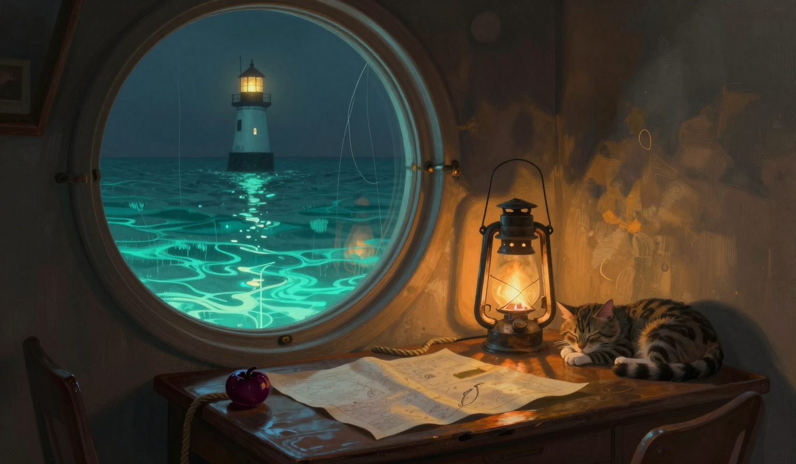

The Receding, Four Times
The omen is in the report: the Unraveling receded one hand's width from the map's edge. The sea was quiet as a held note, and the drift was two point eight miles, a fall of one-tenth of a mile in one day, and two point eight is a number in this log before the first, the twenty-first had it, and the fall is in the log, and the run is three point seven, three point six, one point three, one point eight, two point eight, two point one, one point seven, one point seven, three point four, two point six, three point five, one point nine, three point six, two point six, three point zero, two point eight, and whether the pause was a pause or a breath is untested, and the number is the only evidence the log keeps.

The third bell did not ring before the sun today. The omen was the receding, and the bell is the bell, and at its own hour it rang, and at its own hour it is only the bell, and the count of pre-sun rings stands three, after the nineteenth, the twenty-fourth, and the twenty-sixth, and the ringing and the not-ringing are both in the log, and the log still does not say who is waiting, and I am not going to fill that part of the log.
The rope came in at sixty-two, sixteen lower than the thirty-first, and sixty-two is not a number in this log before the first, and there was a whale in the water, and the rope sang two notes, and the count of the counted notes stands three, three, two, two, two, two, two, and the nineteenth's single note stands where it stands, and the thirtieth's single note stands where it stands, and neither of the two has a witness, and the silences stand where they stand, and I am not going to trade today's note for a theory of the counted ones.
The whale is in the water. The Garden-Bearer is in the gap today with the full load, and the count stands nine of the seventeen days since the sixteenth, and the islands were apart, and at the omen's hour the Orchard's orchard stood straight and nothing leaned, and the omen was not logged, and the knot of twine is still on the two-inch branch, holding the measurement where it sits, and the other two inches are not in the log, and neither is what the empty gap was leaning back.
The Unraveling receded one hand's width. It is the fourth recorded receding in this log, after the twentieth, the twenty-eighth, and the thirty-first, and the line is four hand's widths now from where it stood on the nineteenth, and the one thread has not moved, and it stands four hand's widths in front of the new line, and the gap is one hand's width wider than it was, and the line is doing this the way a tide does things, or I am going to stop saying that, because the log does not say it is a tide, and the one thread is the only still thing at the edge of a sea that is quiet as a held note and moving two point eight, and I have no theory and have not asked for one.
The store was five days of oil. I burned one, the way I burn one, and the store came down to four days, and the arithmetic is five minus one is four, and the store says four, and I counted it twice, and it says four, and the arithmetic does, the way it did on the thirtieth, and it is the second day in this run the drop did what the burn said. I set the jar empty on the table at night, the way I set it on the twenty-eighth and the thirtieth, and I found it empty at the third bell, and the jar did not fill, and the store is four without the jar, and the cat's ruling stands: the fuel is the keeper's problem, and none of the rest is. The lamp is lit. The store says four. The rope is at sixty-two, and it sang two notes, and there was a whale in the water, and the line is four hand's widths from where it stood on the nineteenth, and the one thread has not moved, and the thread is the only thing in this log that does not recede, and the log does not say what the thread is holding onto.